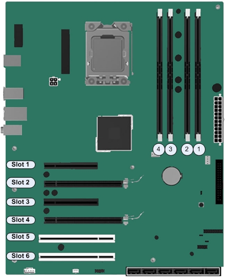
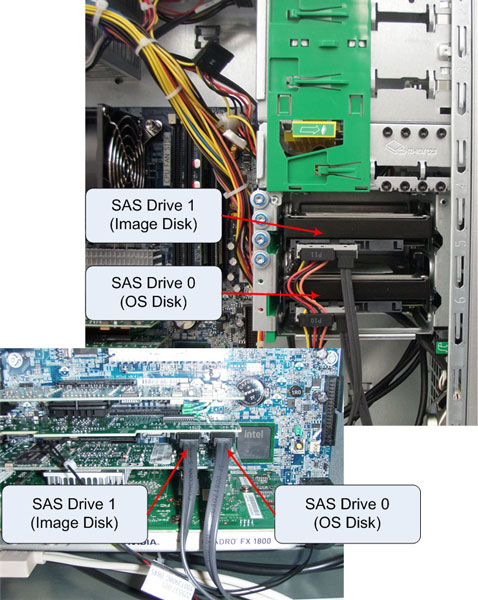
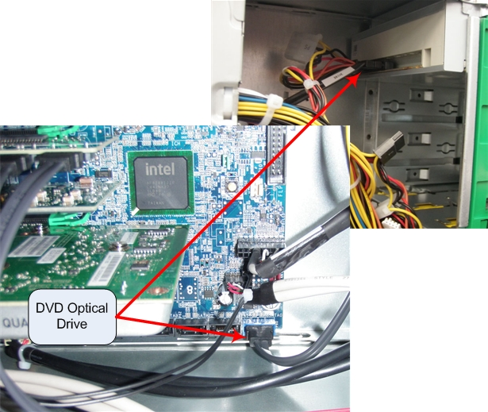

Operating Documentation
Direction 5193574-800, Rev# 22
LightSpeed 7.X Service Methods
Module Version 3.0, Version Date 3/4/11
Operating Documentation |
| Last revised: | 10 February 2011 |
The Host PC in the Global Operator’s Console (GOC) is the master computer that controls the operation of the CT systems. This PC controls the acquisition, reconstruction, display, archive, and output (film, DICOM, etc.) of patient data and images.
The Host PC accomplishes these tasks by taking input from the User via keyboard, mouse and trackball, and using this input, along with the operating and application software loaded on the Host PC, to control and communicate with the subsystems responsible for image generation, reconstruction, and display. The Host PC communicates via Gigabit Ethernet interface with the following:
Reconstruction Engine
Gantry/Table
AW and Xeleris Workstations
Hospital Network
The Host Computer’s Video display ports, connected to two display monitors, handle visual display of the User I/F and Image Generation. The User’s Keyboard connects with the Host Computer via the USB 2.0 ports, as well as the Trackball and Service Key devices. The User's Mouse connects with the Host Computer via the PS/2 or USB 2.0 port. The Host Computer’s integrated audio controller is used for the Autovoice feature and interfaces with the ICOM via standard analog audio PC connections. The Host Computer also interfaces with external Peripheral Towers. The DVD Peripheral Tower uses the USB 2.0 ports and the optional MOD Peripheral Tower uses the optional Ultra Fast SCSI port to interface with the Host Computer.
The GOC Host Computers have historically been PCs supplied by OEM vendor Hewlett Packard. The model discussed below is the Z400, which is the latest in the series of HP PCs (after the xw8000, xw8200 and xw8400). The following is a brief overview of the hardware and software theory associated with the Z400.
| NOTE: | Obtain complete details of the HP Z400 PC from Hewlett
Packard’s support web site: http://welcome.hp.com/country/us/en/support.html Search by PC model number and download the appropriate Technical Reference Guide. |
Illustration 1: Host Computer HP Z400

The HP Z400 Host Computer is an Intel® Xeon® processor-based workstation configured by GE Healthcare for use as the Host Computer in the GOC console. Its basic configuration is:
| Quantity | Component |
| 1 | Intel W3520 or W3530 Series Quad Core Xeon (Nehalem) 2.66 / 2.8 GHz CPU w/8MB shared cache |
| 1 | Intel X58 Express (36S Tylersburg) Chipset (versions B3 or C2) |
| 2 | DDR3, 1333 MHz, 2 GB, Unbuffered ECC DIMM Memory Modules (total of 4 GB for VCT) OR |
| 4 | DDR3, 1333 MHz, 4 GB, Unbuffered ECC DIMM Memory Modules (total of 16 GB for 750HD) |
| 1 | DVD 16X SATA Optical Drive |
| 1 | PCI-e SAS Controller Card, |
| 2 | SAS Hard Disk Drives: 146 GB or 300 GB (destroked to 146GB)15K RPM |
| 1 | PCI-E x16 Nvidia Quadro FX1800 768MB Video Card |
| 1 | PCI Quad Port Gigabit Ethernet Card |
| 1 (Optional) | PCI-e U320 SCSI Controller Card w/external port |
| 1 | Dual PORT USB 2.0 Bulkhead Panel |
| 1 | 475W 85% efficient PSU |
The Z400 Host Computer motherboard (Illustration 2) utilizes a FCLGA1366 Socket Xeon Processor Motherboard (called the “Systemboard” in HP terminology) with:
Intel Zeon® W3520 or W3530 Nehalem 2.66 GHz or 2.80 GHz Processors w/8MB shared L2 Cache
Front Speed Buss of 1066 MHz
4 Memory Slots (16 GB max.)
Integrated with:
Audio
GbE NIC Port (eth 4)
USB 2.0 ports (8 rear & 2 front)
Illustration 2: HP Z400 Host Computer Motherboard Layout

| Item | Description | Item | Description | Item | Description | Item | Description |
| 1 | CPU Fan | 9 | Floppy Disk Drive (Not Used) | 17 | Internal USB 1 (USB Bulkhead Rear) | 25 | PCIe x8(4) Slot (Quad Port Ethernet Card) |
| 2 | Rear Chassis Fan | 10 | Password Jumper | 18 | SATA Ports (DVD Port 0) | 26 | PCIe2 x16 Slot (SAS Controller Card) |
| 3 | CPU Power | 11 | Chassis Intrusion Switch | 19 | Internal USB 2 | 27 | PCIe2 x8(4) Slot (Optional SCSI Controller Card) |
| 4 | Solenoid Hood Lock (Not Used) | 12 | Clear CMOS Button | 20 | Front USB | 28 | Audio |
| 5 | CPU Socket | 13 | Front Power Button/LED | 21 | Speaker | 30 | USB |
| 6 | Memory Sockets | 14 | Crisis Recovery Jumper | 22 | Front Audio | 31 | PS/2 Keyboard/Mouse (Not Used) |
| 7 | Main Power | 15 | Front Chassis Fan | 23 | PCI 32/33 Slots (Not Used) | 32 | Serial (No Connection) |
| 8 | CMOS Battery | 16 | HDD LED | 24 | PCIe2 x16 Slot (GPU Card) |
The Z400 Host Computer is equipped to handle up to four (4) memory DIMM Modules in a variety of configurations. Based on the type of system on which the Z400 is installed, the amount and configuration of memory modules may vary. The configuration for VCT Systems; Dual Channel Mode Slots 1 & 2, each containing a 2 GB DDR3 ECC Unbuffered DIMM Memory Module for a total of 4 GB. The configuration for VCT Systems; Dual Channel Mode Slots 1, 2, 3, & 4 each containing a 4 GB DDR3 ECC Unbuffered DIMM Memory Module for a total of 16 GB.
Illustration 3: HP Z400 Memory Slot Assignments

The Z400 utilizes two Serial Attached SCSI (SAS) hard disk drives:
146 GB (or 300GB destroked to 146GB), 1K RPM, OS Disk (SAS 0)
146 GB, (or 300GB destroked to 146GB), 1K RPM, Image Disk (SAS 1)
| NOTE: | The Z400 Host Computer uses SAS type Hard Disk Drives. These drives are not compatible with the previous generation of HP PCs (i.e., xw8000 or xw8200). Do not attempt to swap these drives between PC types. |
The OS Disk (SAS Drive 0) holds the CT Operation System and Application software. The Image Storage Disk (SAS Drive 1) utilizes one large disk partition to hold patient image data. Unlike previous Host PCs, the Z400 Host Computer does not use a RAID 0 configuration (Striped Array). The SAS interface bandwidth is large enough to store image data without the need to stripe (split) data across multiple drives.
The SAS Controller Card is inserted in Slot 2 on the Z400 Host Computer motherboard, with the connection between controller and disk drives supplied via SAS cables. (See Illustration 4).
Illustration 4: HP Z400 SAS Hard Disk Drive Interconnect

The Z400 Host Computer utilizes an SATA II DVD Optical disk drive connected directly to the integrated SATA II Controller (SATA 0) on the motherboard. (See Illustration 5).
Illustration 5: DVD Optical Drive Connection

The Z400 Host Computer has a Quad Port Gigabyte Ethernet (GbE) Adapter Cards installed in the PCIe-x8 expansion slot 3. This card expands the Z400’s Ethernet interface to 5 total external ports (eth0-eth4).
| Port ID | Port Address |
|---|---|
| A | eth2 |
| B | eth3 |
| C | eth0 |
| D | eth1 |
| Integrated Motherboard NIC Port | eth4 |
A Nvidia Quadro FX1800 768MB PCI-E x16 Video Card, located in Slot 4 of the Z400 Host Computer chassis, drives the Scan and Display monitors. The graphics card has 768 MB of fast GDDR3 memory and utilizes the latest PCIe x16 buss.
An U320 SCSI Controller Card, located in Slot 1 in the Z400 Host Computer chassis, drives the optional MOD Peripheral Tower and/or the optional DASM (Film Formatter I/F).
| NOTE: | The Z400 Host Computer will only contain the SCSI Controller Card if the above mentioned options have been included with system. This card will be installed in the Z400 at point of system installation. |
An 475 Watt ATX style PC PSU powers the Z400. The rated voltage range is 100-240 VAC, with line frequency of 47-63 Hz, auto switching, and power factor correction (85% Effeciency).
See Illustration 6 for Connection Labeling of the Z400 Host Computer.
Illustration 6: Z400 Host Computer Connections

| Connection | Description - GOC6.5 HP Z400 Host Computer |
| 1 | Motherboard PS/2 - Not Used |
| 2 | Motherboard PS/2 - Mouse * |
| 3 | Motherboard USB - USB Keyboard |
| 4 | Motherboard USB - USB Mouse |
| 5 | Motherboard USB - USB Trackball |
| 6 | Motherboard USB - External Hard Drive |
| 7 | Motherboard USB - USB Peripheral Tower DVD-RW |
| 8 | Motherboard USB - USB Peripheral Tower DVD-RAM |
| 9 | Motherboard GbE Ethernert (eth4) - CNS Port 9 |
| 10 | Not Used |
| 11 | Audio Out - ICOM |
| 12 | Audio In - ICOM |
| 13 | Expansion Card GbE Ethernet (eth0) Port C - CNS Port1 |
| 14 | Expansion Card GbE Ethernet (eth1) Port D - TGP |
| 15 | Expansion Card GbE Ethernet (eth2) Port A - Hospital Network |
| 16 | Expansion Card GbE Ethernet (eth3) Port B - NOT USED |
| 17 | Not Used |
| 18 | Display Port 1 - Scan Monitor |
| 19 | DVI DUAL LINK - Display Monitor |
| 20 | Expansion Bulkhead USB - Barcode Reader |
| 21 | Expansion Bulkhead USB - Service Key |
| 22 | SCSI 1 - MOD Drive (Optional) |
| 23 | SCSI 2 - DASM (Optional) |
| * GOC6.5 Consoles may use PS/2 Mouse | |
The Z400 Host Computer is loaded with a Linux-based 64 Bit Operating System (OS), and GEHC’s CT Application (APPS) software.
The Z400 Host Computer is equipped with a ROM-based initialization firmware that starts the PC hardware. The BIOS of the computer is a collection of machine language programs stored as firmware in ROM. The BIOS ROM includes such functions as POST, PCI device initialization, Plug 'n Play support, power management activities, and the Computer Setup (F10) Utility. See Z400 Host Computer BIOS Setup for BIOS setup and configuration.
| NOTE: | The Z400 BIOS ROM has a built-in Flash utility for updating and recovering the BIOS firmware. Bootable Floppy or CD-Rom is no longer required to flash this firmware. |
Support for the Z400 on Lightspeed VCT XT / XTe requires GEHC OS and APPS software versions listed below:
GEHC/CTT Linux, Version: 5.3.11
Lightspeed VCT XT/XTe - CT Application Software Version 10MW06.5 or newer.
Discovery CT 750HD - CT Application Software Version 10MW25.6 or newer.
The Load From Cold procedure found in the Software Chapter of this manual provides instructions for software loads.